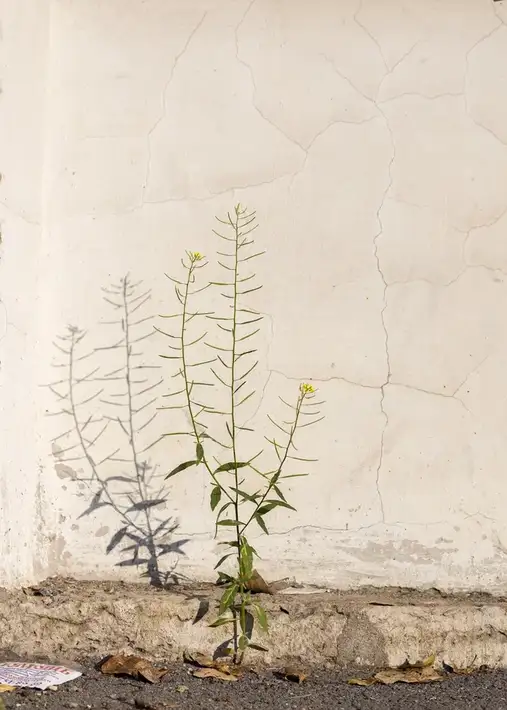
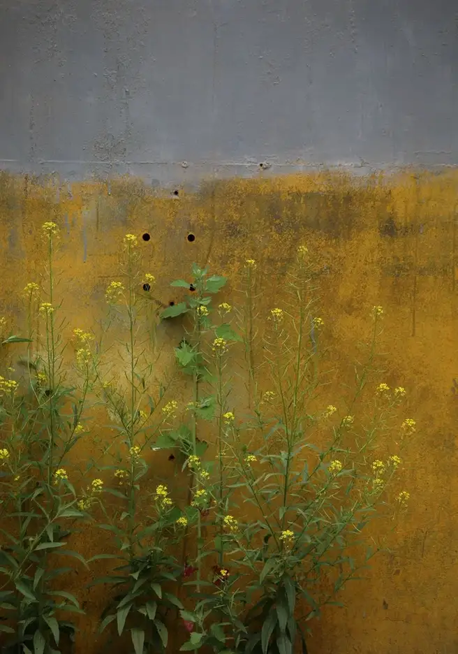
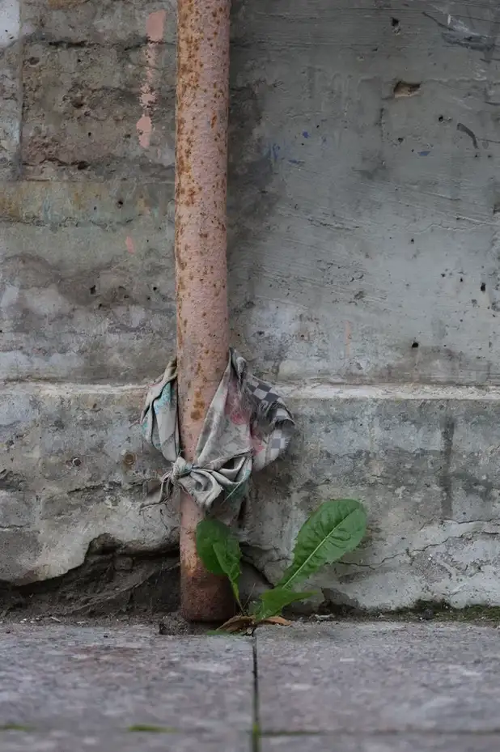
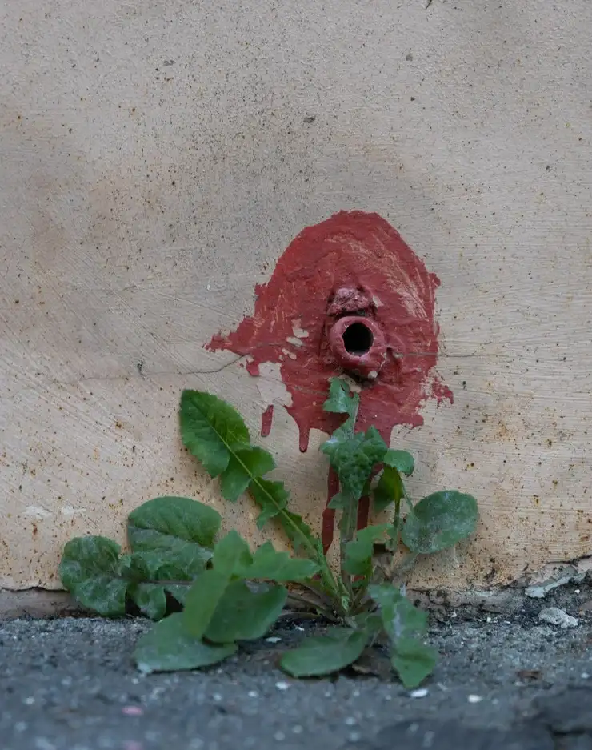
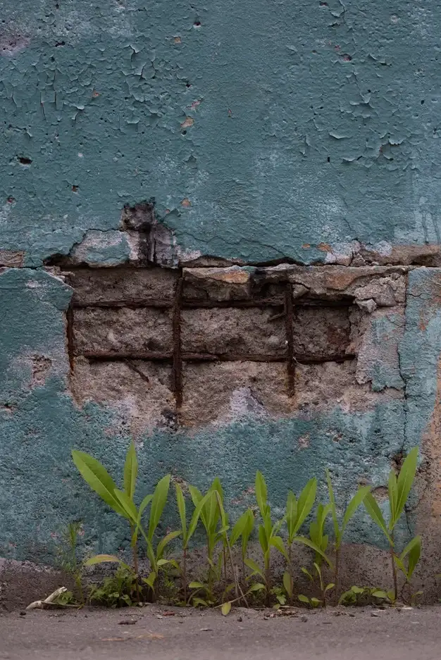
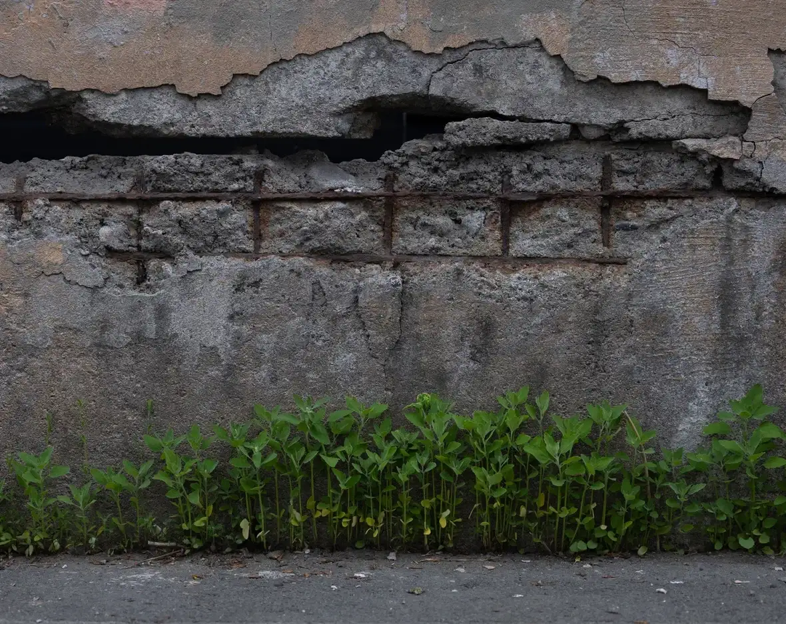
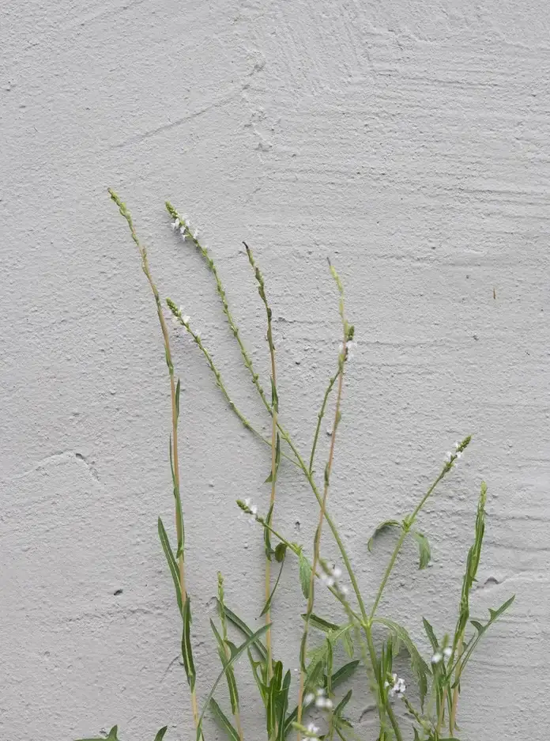
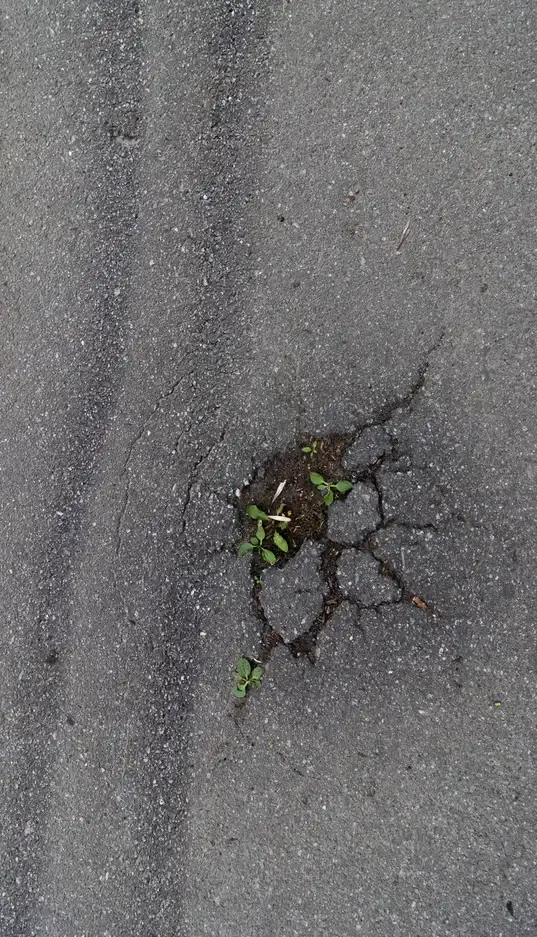

Пробиться
Стать взрослым - это научиться адаптироваться к неблагоприятным условиям, вырабатывать стратегию, развиваясь в той среде, которая есть. Можно пробиться даже там, где кажется, что это невозможно.
Запечатленные мною ростки вырастают в далеко не идеальных условиях, но эта смесь условий и тяге к жизни делает их уникальными и достойными внимания. Точному могу сказать - я бы не обратила внимание на росток перечного горца на клумбе - именно неблагоприятная среда создает их характер. Ведь каждый росток пророс благодаря своим характеристикам и тактике прорастания.
Важным фактором для роста, помимо прорастания, является ещё и умение пустить корень. Он не только должен быть крепкой опорой, но и содержать мысль, суть ростка. Корень формируется, когда самого растения ещё не видно, и в этом его преимущество: пока никто не видит можно ошибаться, расти в разные стороны.
У желтушника раскидистого (лат. Erýsimum diffúsum), например, корень вовсе не раскидистый, а слабо разветвленный, он ещё точно не знает, где его ждет успех, он ищет свой путь, находиться в постоянном движении и именно эта тактика позволяет ему укорениться.


Одуванчик (лат. Taráxacum) слишком цепкий, у него ветвистый корень толщиной до 2 см и длиной от 20 до 60 см. Его считают сорняком и чаще всего пытаются изничтожить. Но разве можно так относиться к тем, кто приложил столько усилий?


Корень латука дикого (лат. Lactūca ferus) проникает на глубину 165–300 см. Листья его обладают колючими зубчиками и жесткими щетинками, а для человека он и вовсе ядовит. Наверное, именно благодаря этим качествам ему удается пробиваться целыми семьями.


Горец перечный (лат. Persicária hydropíper) и Подорожник (лат. Plantágo) используют в качестве лекарственного сырья для создания кровоостанавливающих средств. Несмотря на свое желание помочь окружающим, им все равно приходиться пробиваться.

